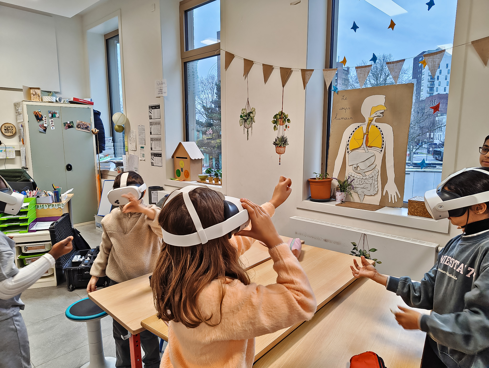
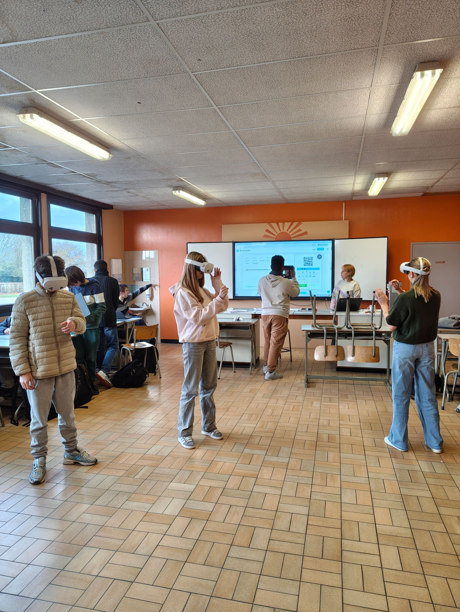
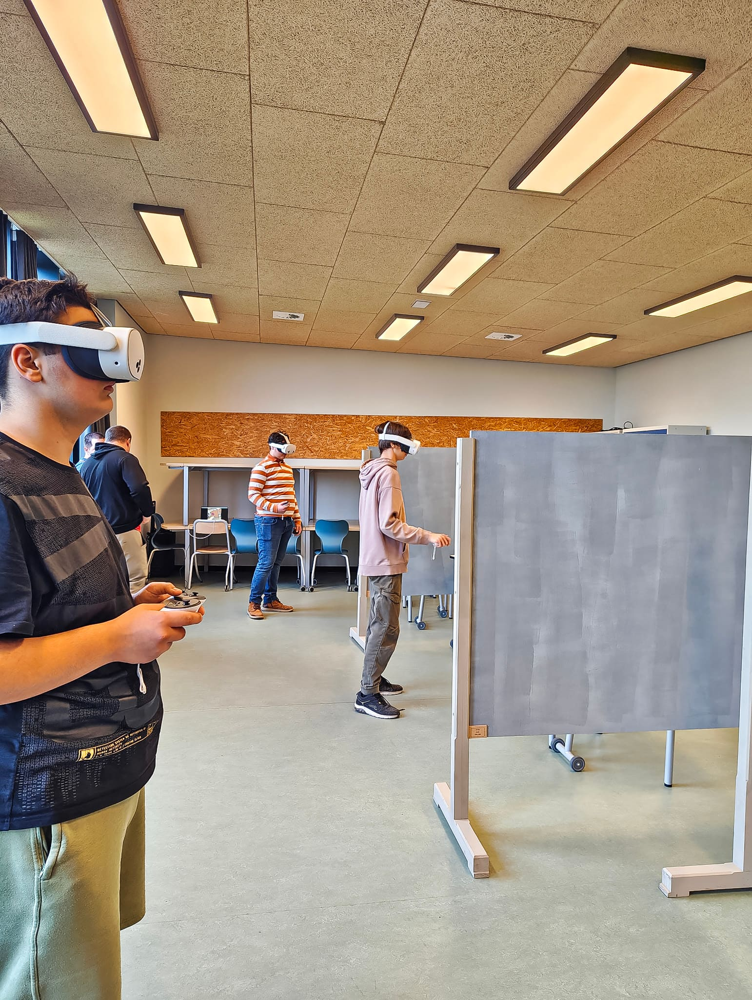
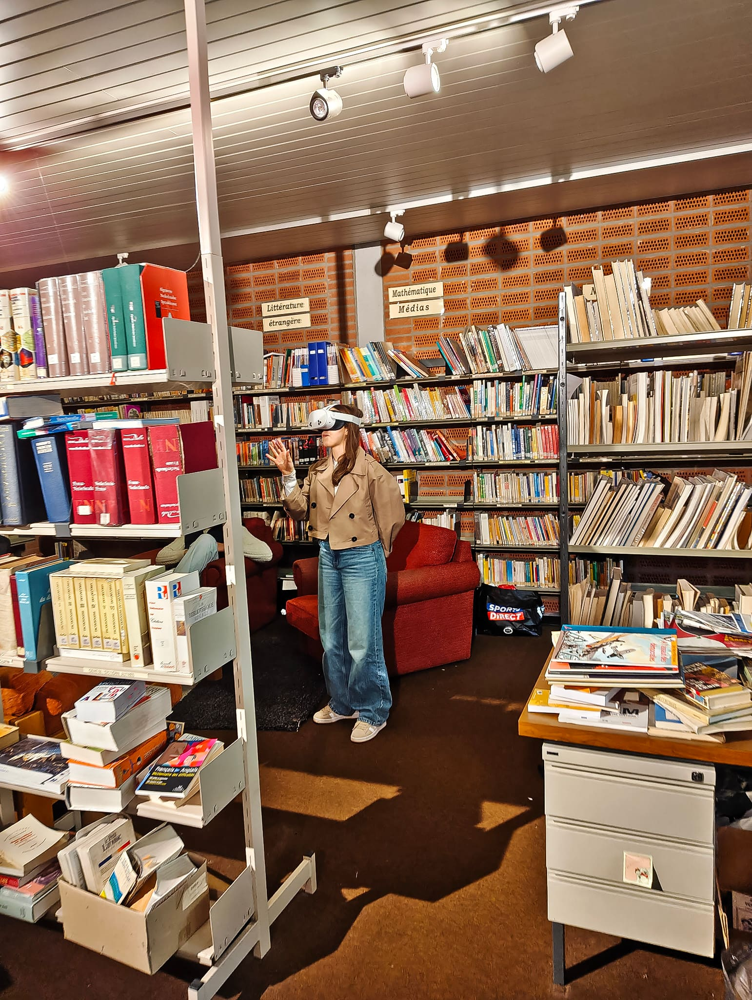

Ateliers pilotes en classe pour découvrir les sciences autrement à l'aide de la réalité virtuelle.

Entre décembre 2025 et février 2026, on a testé un format différent : amener la XR directement en classe, plutôt que l'inverse. 7 ateliers menés dans 5 écoles de Belgique francophone, avec des élèves de 7 à 18 ans (primaire à secondaire) — en s'appuyant sur MetaMorphos VR pour la biologie, et deux applications partenaires pour la chimie (TableCraft VR) et la cosmologie (Cosmic XR).



Chaque atelier combine une séquence en casque VR par petits groupes et des activités complémentaires sur support physique, pour ancrer l'expérience dans le programme scolaire réel — pas juste une démonstration ponctuelle. L'idée : rendre manipulable ce qui reste normalement abstrait ou invisible — un organisme marin à taille réelle, une molécule en trois dimensions, une orbite planétaire.
des enseignants ayant répondu ont constaté une plus-value par rapport au cours classique.
ont constaté une motivation supplémentaire chez les élèves habituellement en difficulté.
Aucun des enseignants interrogés n'avait utilisé la VR en classe auparavant.
Parlons de votre idée — quel que soit le stade où elle se trouve.